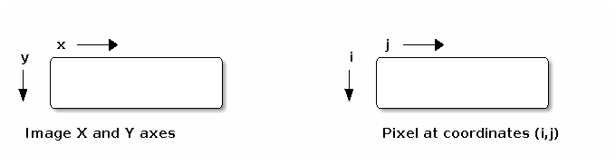

Quick Introduction to OpenCV
Written for the Computer Vision course at IIIT-H.
1 Assumptions
- You are familiar with basic Image Processing/Vision terminology.
We hope that you won't have to search around too much after reading this document. It will surely help you understand what you need to search for.
2 Images
2.1 Conventions in OpenCV

The image origin is at the top left corner of the image. Note the difference between the X,Y axis and the I,J axis.
2.2 IplImage related
IplImage is the OpenCV struct for an image. It basically contains information like the image width, image height, image data, image color depth etc.
A very simple demo can be found in readImage.cpp. For now, don't worry about the windowing stuff. We'll visit it later.
In the later version of OpenCV (>=2.0), there is a structure called as CvMat which is much more powerful (but also slightly more complicated) than IplImage.
It is also used for storing images. CvMat can be used to manipulate images with as much ease as in Matlab. 1
2.2.1 Naming convention
Any time you need to create a new IplImage (say to store an output image), you will specify certain attributes.
These can generally be broken down as below
IPL_DEPTH_<bit_depth>(S|U|F) where - bit_depth indicates the depth of each color channel - S|U|F indicate what data-type is used to store the image data. Example: IPL_DEPTH_8U : indicates an 8-bit (per color channel) unsigned integer image.
Refer to the file applyFilter.cpp for more details.
2.3 Reading images
IplImage* cvLoadImage( const char* filename, int iscolor)
iscolor
- if >0, the loaded image will always have 3 channels;
- if 0, the loaded image will always have 1 channel;
- if <0, the loaded image will be loaded as is (with number of channels depends on the file).
Supports most common formats like bmp, jpg, png etc.
2.4 Writing images
cvSaveImage( const char* filename, IplImage *img)
You might find the prototype to be cvSaveImage( const char* filename, CVArr *img). Don't worry because IplImage is a special case of CvArr.
2.5 Access image data
In most cases handling images as 8-bit unsigned integer arrays is easiest. So try and stick to that.
To manipulate pixel (i,j) of IplImage *img you may use
cvGet2D(img,i,j), cvSet2D(img,i,j,value): slow but reliable- Grayscale image:
((uchar *)(img->imageData + i*img->widthStep))[j]=100: efficient but error prone method - Color Image:
((uchar *)(img->imageData + i*img->widthStep))[j*img->nChannels + 0]=1; // Blue ((uchar *)(img->imageData + i*img->widthStep))[j*img->nChannels + 1]=2; // Green ((uchar *)(img->imageData + i*img->widthStep))[j*img->nChannels + 2]=3; // Red
2.6 Convert between color spaces
cvCvtColor(src,dst,flags)
flags : CV_BGR2GRAY, CV_BGR2HSV
Important Note: For most of these image related functions wherein you require a dst (destination) image, you need to create the image beforehand using cvCreateImage.
3 Windowing stuff
OpenCV uses the highgui library for windowing. It provides basic windows, sliders, mouse handling, key handling etc.
3.1 Creating windows
1: //create a window with "windowTitle" as the title. The size of the window depends on what you display in it. 2: cvNamedWindow("windowTitle",CV_WINDOW_AUTOSIZE); 3: //Move the window to a (100,100) 4: cvMoveWindow("windowTitle",100,100); 5: //Show the image in the window 6: cvShowImage("windowTitle",img); 7: //cvWaitKey waits till some key is pressed. In our case, it will show the window on screen till some key is pressed 8: cvWaitKey(0); 9: .... 10: .... 11: cvDestroyWindow("windowTitle"); 12:
3.2 Mousehandler
An example for selecting points in the image by using a mouse.
1: void mousehandler(int event,int x,int y,int flags,void *params) 2: { 3: 4: switch(event){ 5: case CV_EVENT_LBUTTONUP: 6: printf("Left button pressed at (%d %d)\n",x,y); 7: break; 8: } 9: } 10:
4 Videos
4.1 Read frames
You may read video frames from a file or use your own webcam as an input.
1: CvCapture *capture; 2: 3: capture = cvCaptureFromCAM(0); //capture from web-cam 4: capture = cvCaptureFromAVI("file.avi"); //capture from file 5: 6: IplImage *img = cvQueryFrame(capture); //read a single frame 7: 8: while (img!= NULL) 9: { 10: img = cvQueryFrame(capture); //read the entire video 11: } 12:
4.2 Get capture information
cvGetCaptureProperty(capture, flags)
flags
CV_CAP_PROP_FRAME_HEIGHTCV_CAP_PROP_FRAME_WIDTHCV_CAP_PROP_FPSCV_CAP_PROP_FRAME_COUNT: Sometimes doesn't work correctly!
4.3 Writing a video
This is a slightly involved operation. Uses cvCreateVideoWriter etc. functions. For the most part, you will not need to write videos.
4.4 Displaying a video
Note: You will not be able to add any sound while displaying video in the below mentioned manner.
1: capture = cvCaptureFromAVI("file.avi"); //capture from file 2: IplImage *img = cvQueryFrame(capture); 3: 4: cvNamedWindow("windowTitle",CV_WINDOW_AUTOSIZE); 5: cvMoveWindow("windowTitle",100,100); 6: 7: while (img!=NULL) 8: { 9: cvShowImage("windowTitle",img); 10: cvWaitKey(0); 11: img = cvQueryFrame(capture); 12: }
5 References
- http://dasl.mem.drexel.edu/~noahKuntz/openCVTut1.html - Excellent source of tutorials with great example codes.
- http://www710.univ-lyon1.fr/~bouakaz/OpenCV-0.9.5/docs/ref/OpenCVRef_Highgui.htm -
highguireference with function prototypes. - The OpenCV Manual
Footnotes:
1 : For more information on CvMat refer to Chapter 3 of "Learning OpenCV" by Bradski and Kaehler (O'Reilly Publications).